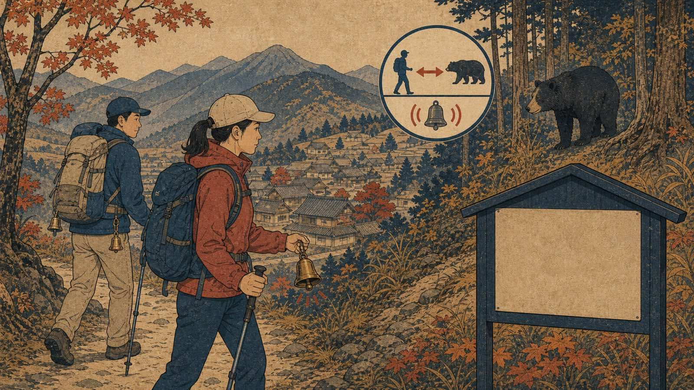

O Japão turístico costuma ser lembrado por trens, templos e cidades organizadas, mas grande parte do país é montanhosa e habitada por vida selvagem. Em áreas rurais, trilhas e bairros próximos a florestas, encontros com ursos exigem prevenção séria.

O risco varia muito por região, estação, alimento disponível na montanha e proximidade de áreas humanas. Prefeituras e municípios publicam alertas próprios quando há avistamentos. Por isso, orientação local é mais importante do que conselho genérico de internet.
Como evitar encontros
Antes de trilhas, confira alertas da prefeitura, centro de visitantes e mapas locais. Evite caminhar sozinho em áreas de risco, faça ruído moderado, carregue sino ou item recomendado localmente e não deixe comida exposta. Lixo, frutas caídas e restos de acampamento atraem animais.
Horários de pouca visibilidade, matas densas e locais com relatos recentes pedem cautela extra. Em regiões com histórico de ataques, siga instruções municipais sobre rotas fechadas, avisos de escola e coleta de lixo.
Se encontrar um urso
Não se aproxime, não tente fotografar de perto e não corra em pânico. Afaste-se lentamente se houver distância, mantendo atenção ao animal e procurando rota segura. Se o urso estiver perto demais, siga a orientação de autoridades locais e equipes de parque, porque conduta específica pode variar conforme espécie, terreno e situação.
A regra principal é evitar transformar curiosidade em aproximação. Animal selvagem não é atração de bairro. Para famílias brasileiras em cidades menores, vale ensinar crianças a não seguir animais, não tocar filhotes e avisar adultos ao ver placas ou relatos de avistamento.
Aviso de atualização
Texto revisado em 10 de agosto de 2026. Alertas de urso mudam diariamente por prefeitura, cidade e temporada. Antes de trilhas ou deslocamento em área rural, confirme fontes locais oficiais.
Fontes consultadas
- Ministry of the Environment: wildlife management
- Ministry of the Environment: medidas relacionadas a ursos